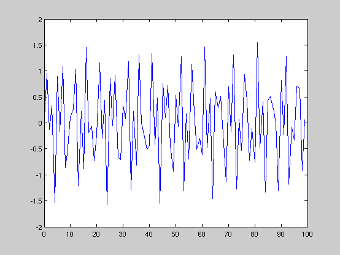
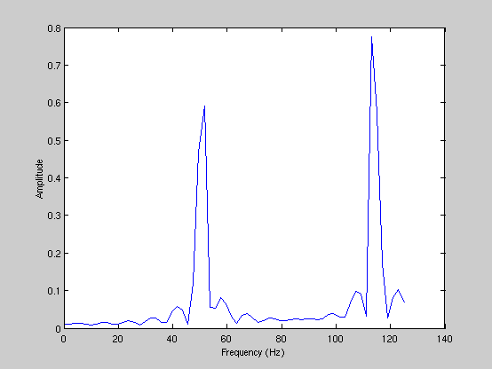
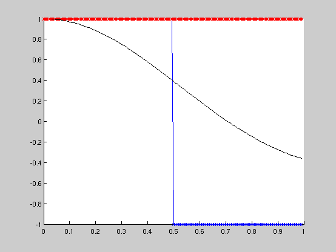
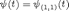
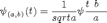
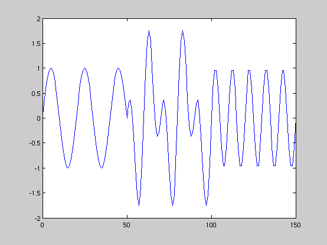

Exploring Wavelets
7/5/2008 by Tom Whipple
Contents
Setup
clear;
close all
Example signal
This is the traditional method for analyzing signals. Taken from 'doc fft' in Matlab, with minor modifications.
Fs = 250; % Sampling frequency L = 100; % Length of signal t = (0:L-1)/Fs; % Time vector pow = nextpow2(L); N = 2^pow; A = [.7 .9]; % Amplitude vector (scaling) W = [50 112]; % Frequency vector (Hz) -- max value is Fs/2. sig = A * sin(2*pi* W'*t ); % sig = sig + randn(1,L); % gaussian noise
Plot the signal:
figure, plot(Fs*t,sig)
Traditional approach: the FFT
Here we can easily see what the freqencies W are.
spectrum = fft(sig,N)/L; figure, plot( Fs/2*linspace(0,1,N/2) , 2*abs( spectrum(1:N/2) ) ) xlabel('Frequency (Hz)') ylabel('Amplitude')
Wavelet functions
S_xxx is the scaling function. W_xxx is the wavelet function.
The Haar wavelet is the simplest and oldest wavelet function. It is a simple step function.
W_haar = @(x) ((0<=x)&(x<.5)) - ((.5<=x)&(x<1)); S_haar = @(x) ((0<=x)&(x<1)); W_mexhat = @(t) (1-2*t.^2).*exp(-t.^2);
Plots:
x = (0:N-1)/N; figure; hold on; plot(x, W_haar(x),'-bx'); plot(x, S_haar(x),'-r*'); plot(x, W_mexhat(x),'-k');
Scaling
Now let's take a look at how scaling & translation works. The functions above are the "mother wavelet",

The "child wavelets" are defined as

wav = W_haar; scl = S_haar; p = 3; %t = (0:2^(p+1)-1)/2^(p+1); N = 8; w = zeros( N/2, N); n = 0:N-1; a = 2^(p-1); %b = 0:N-1; t = 0:N-1; for i = 0:N/2-1; b = i*2^(p-1); w(i+1,:) = wav( (t-b)/(a) ); end w
w =
1 1 -1 -1 0 0 0 0
0 0 0 0 1 1 -1 -1
0 0 0 0 0 0 0 0
0 0 0 0 0 0 0 0
N = 8; t = 0:N-1/N; % t in [0,1) p = 2; a = 2^p; w = zeros( a, N); for i = 0:a-1 b = i * 2^p; w(i+1,:) = wav((t-b)/a); end w
w =
1 1 -1 -1 0 0 0 0
0 0 0 0 1 1 -1 -1
0 0 0 0 0 0 0 0
0 0 0 0 0 0 0 0
for k = 0:2^(p+1)-1 b = k*2^p; ; end w
w =
1 1 -1 -1 0 0 0 0
0 0 0 0 1 1 -1 -1
0 0 0 0 0 0 0 0
0 0 0 0 0 0 0 0
mx = 5; filt = struct; for i = mx:-1:1 n = 2^(i-1); t = (0:2^i-1)/2^i; filt(i).wv = zeros(n,2^i); filt(i).sc = zeros(n,2^i); for j = 1:n; filt(i).wv(j,:) = W_haar(n*t-(j-1)); filt(i).sc(j,:) = S_haar(n*t-(j-1)); end end
Daubechies Coefficients
swp = [0 0 0 -1; 0 0 1 0; 0 -1 0 0; 1 0 0 0];
%D4_S = ([ 1 3 3 1 ] + [1 1 -1 -1]*sqrt(3))/(4*sqrt(2));
D4_S = ([ 1 3 3 1 ] + [1 1 -1 -1]*sqrt(3))/4;
D4_W = D4_S * swp;
h = D4_S/sqrt(2); H = [h(1) 0 0 0; h(3) h(2) h(1) 0; 0 h(4) h(3) h(2); 0 0 0 h(3)];
mx = 9; filt = struct; for i = 2:mx n = 2^(i-1); filt(i).wv = zeros(n,2^i); filt(i).sc = zeros(n,2^i); for k = 1:n-1 filt(i).sc(k,2*k-1:2*k+2,end) = D4_S; filt(i).wv(k,2*k-1:2*k+2,end) = D4_W; end % make periodic % filt(i).sc(n,end-1:end) = D4_S(1:2); % filt(i).wv(n,end-1:end) = D4_W(1:2); % filt(i).sc(n,1:2) = D4_S(3:4); % filt(i).wv(n,1:2) = D4_W(3:4); end
close all
f_1 = @(t) ((0<=t)&(t<100)) .* sin(pi*t/10);
f_2 = @(t) ((50<=t)&(t<150)) .* sin(pi*2*t/10);
t = 0:150;
figure, plot(t,f_1(t)+f_2(t))
